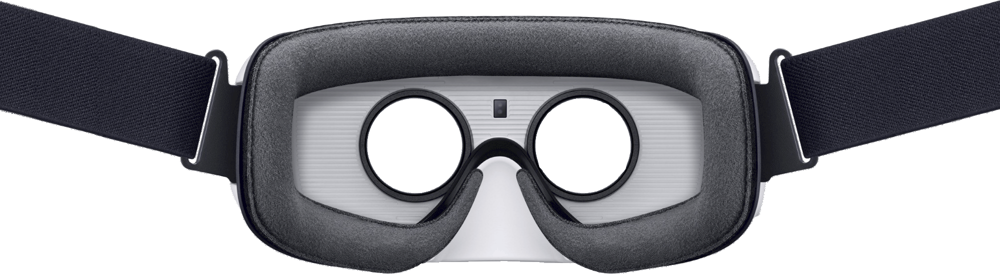

What is
VR?
Computer generated, reality manipulated and explored using various input devices such as goggles, headphones, gloves, or a computer. Using these devices a user can browse throughout a virtual world or pickup and manipulate virtual objects.
-
Believable
You really need to feel like you're in your virtual world (on Mars, or wherever) and to keep believing that, or the illusion of virtual reality will disappear. -
Interactive
As you move around, the VR world needs to move with you.
You can watch a 3D movie and be transported up to the Moon or down to the seabed? But it's not interactive in any sense. -
Computer-generated
Why is that important?
Because only powerful machines, with realistic 3D computer graphics, are fast enough to make believable, interactive, alternative worlds that change in real-time as we move around them. -
Explorable
A VR world needs to be big and detailed enough for you to explore.
However realistic a painting is, it shows only one scene, from one perspective. -
Immersive
To be both believable and interactive, VR needs to engage both your body and your mind.
Paintings by war artists can give us glimpses of conflict, but they can never fully convey the sight, sound, smell, taste, and feel of battle.
The Whole new Gaming Experience
Live games while playing games.
A complete new experience in the gaming world will change the concept of the games.
Feel the Virtual World Real
Experience the thrill of Virtual reality and turn virtual world into real.
Live the dreams.
Get ready to be amazed
Be prepared to be amazed by an unknown and never experienced virtual reality.
Finally dreams come true and so the virtual reality.
Here are the ways you can use VR
Virtual reality isn't just a viewmaster for your video games. It's an entirely new medium whose true purpose is slowly being realized. Here are a few of the ways VR will be used over the next few years.
Entertainment
From films made by Hollywood to live-streamed concerts and theatrical experiences, VR has become a place to view videos that surround you. New cameras are being created to capture these VR stories, and tools to upload and livestream them are growing in number. Soon, these experiences might not even seem like films at all.
Education & Simulation
Medicine, chemistry, physics, astronomy: VR can model the world in an incredibly visual way. And, it can also allow those worlds to be expanded and shrunk, played with and entered. Students could take a class trip to ancient Egypt, or try an open-heart surgery without any risks: VR simulations can offer practice runs at techniques, designs and ideas.
Artistry & Design
Imagine building a real home with virtual tools, or designing parts for a new car as if it already existed in the real world. Imagine painting a 3D masterpiece while collaborating with friends around the globe. Apps and wand-like controllers are already making VR an amazing playground. Soon enough, these tools could become indispensable for a new generation of 3D design.
Gaming
Obviously, video games are one of the main applications for virtual reality as of today. But VR will give game designers the freedom to take games to incredible new places. They can also find new audiences now that players can just reach out and touch things, and turn their head to look, instead of mastering a complex controller covered with joysticks and buttons.
Tourism & Exploration
Virtual tourism is the next best thing to being there. You could visit Paris, Mars, or the bottom of the ocean. Whether you’re watching a 360-degree video someone shot, or a computationally generated 3D simulation, you can shut out the real world and replace it with your destination of choice. One day, you may be able to explore your own memories as well ? imagine recording them with a 360-degree camera, then looking around to see what you missed in the moment.
Psychology & Meditation
VR can become a private space for your mind ? a place to relax and think. Or it can be a place to explore something uncomfortable in a protective simulation. Virtual worlds can be very removed from the real world, or be labs to explore human behavior. Studies have shown that VR is so distracting, it can be a surprisingly effective painkiller compared with traditional medicine.
Real Estate & Shopping
Imagine being able to tour a prospective home from miles away, walking right through the property as if you were there. Imagine placing life-size models of your own furniture into that house, to see if they fit. Now imagine walking into a virtual clothing store with infinite shelf space, where you can see and try any shirt, blouse or pair of shoes on sale. Shopping will never be the same.
" Virtual reality was once the dream of science fiction.
But the internet was also once a dream, and so were computers and smartphones."
Related Links
VR
works
Social & Telepresence
Just because you’re inside a headset doesn't mean you're alone. You could jump into a video game avatar to chat and play, or commute to work by inhabiting a telepresence robot with cameras mounted on its body. Can we connect and meaningfully communicate across distances that way? It’s not clear, but developers are already experimenting with the possibilities.